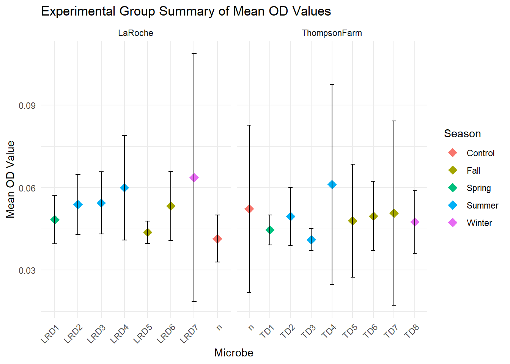
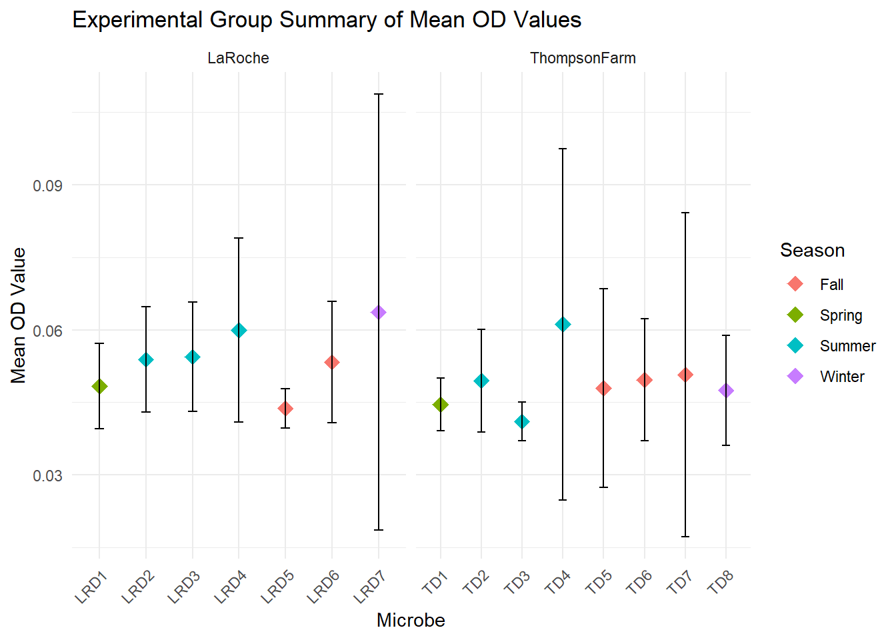
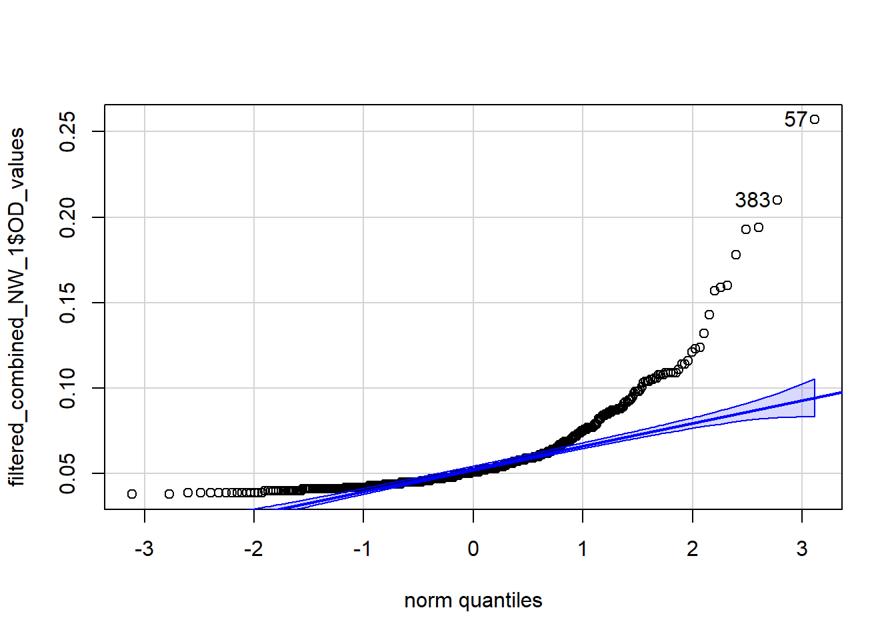
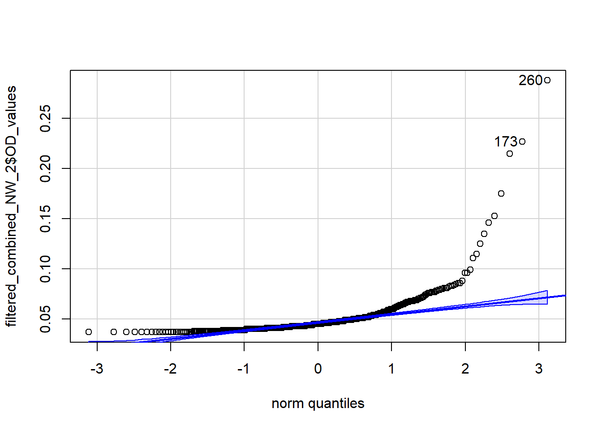
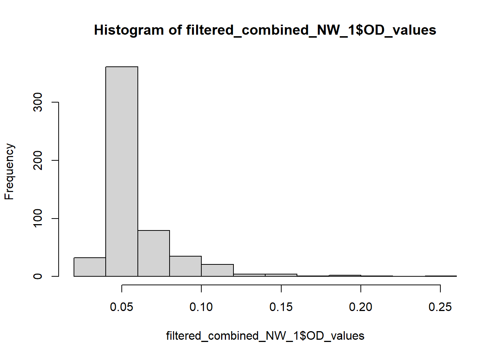
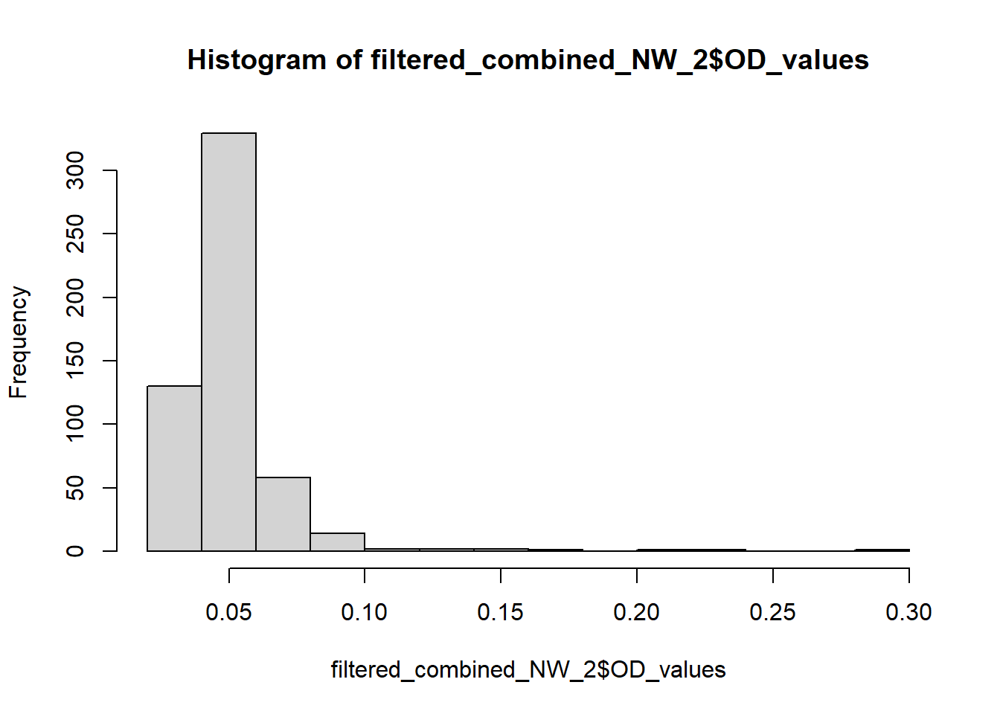
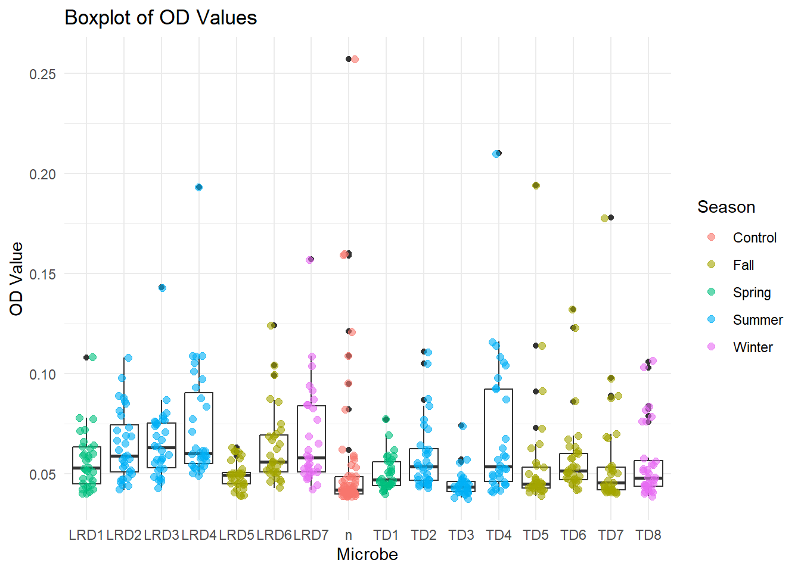

long_data <- data %>%pivot_longer(cols =`1`:`12`, # Select all columns with OD values (1-12)names_to ="Column", # Create a new column for the column numbervalues_to ="OD_values") %>%# New column for OD valuesmutate(Well_ID =paste(...2, Column, sep ="")) # Combine row and column to form Well_ID
my_path_2 <-"C:/Users/emmae/Documents/Plate_setup_undergrad_data_Obrien.xlsx"plate_setup <-read_excel(my_path_2)row_mapping <-c("1"="A", "2"="B", "3"="C", "4"="D", "5"="E", "6"="F", "7"="G", "8"="H")plate_setup <- plate_setup %>%mutate(Row = row_mapping[as.character(Row)], # Convert Row numbers to letters using mappingWell_ID =paste0(Row, Col) # Concatenate Row and Column to form Well_ID )plate_setup <- plate_setup %>%rename(`Plate #`= Plate)
combined_data <-left_join(long_data, plate_setup, by =c("Well_ID", "Plate #"))combined_data$...2<-NULLcombined_data$Col <-NULL
#getting rid of the unknown blankscombined_data_no_water <- combined_data %>%filter(Micr !="Water", Plant !="Water")
#Getting Rid of Outliers Read 1threshold <-1.0# Set your threshold value# Filter out rows where OD is greater than the thresholdfiltered_combined_NW_1 <- combined_data_no_water %>%filter(OD_values <= threshold, Read =="Read 1:450")
#Getting Rid of Outliers Read 2threshold <-1.0# Set your threshold value# Filter out rows where OD is greater than the thresholdfiltered_combined_NW_2 <- combined_data_no_water %>%filter(OD_values <= threshold, Read =="Read 2:600")
`summarise()` has grouped output by 'Read', 'Plant', 'Micr'. You can override
using the `.groups` argument.
ggplot() +geom_point(data = exp_group_summary_read_2, aes(x = Micr, y = mean_OD, color = Season), shape =18, size =4) +geom_errorbar(data = exp_group_summary_read_2, aes(x = Micr, ymin = mean_OD - sd_OD, ymax = mean_OD + sd_OD), width =0.2) +facet_wrap(~ Plant, scales ="free_x") +labs(title ="Experimental Group Summary of Mean OD Values",x ="Microbe",y ="Mean OD Value",color ="Season") +theme_minimal() +theme(axis.text.x =element_text(angle =45, hjust =1))

exp_group_summary_read_2_no_control <- exp_group_summary_read_2 %>%filter(Micr !="n", Season !="Control")
ggplot() +geom_point(data = exp_group_summary_read_2_no_control, aes(x = Micr, y = mean_OD, color = Season), shape =18, size =4) +geom_errorbar(data = exp_group_summary_read_2_no_control, aes(x = Micr, ymin = mean_OD - sd_OD, ymax = mean_OD + sd_OD), width =0.2) +facet_wrap(~ Plant, scales ="free_x") +labs(title ="Experimental Group Summary of Mean OD Values",x ="Microbe",y ="Mean OD Value",color ="Season") +theme_minimal() +theme(axis.text.x =element_text(angle =45, hjust =1))

library(multcomp)
Loading required package: mvtnorm
Loading required package: survival
Loading required package: TH.data
Loading required package: MASS
Attaching package: 'MASS'
The following object is masked from 'package:dplyr':
select
Attaching package: 'TH.data'
The following object is masked from 'package:MASS':
geyser
library(car)
Loading required package: carData
Attaching package: 'car'
The following object is masked from 'package:dplyr':
recode
The following object is masked from 'package:purrr':
some
qqPlot(filtered_combined_NW_1$OD_values)

[1] 57 383
qqPlot(filtered_combined_NW_2$OD_values)

[1] 260 173
hist(filtered_combined_NW_1$OD_values)

hist(filtered_combined_NW_2$OD_values)

ggplot(data = filtered_combined_NW_1, mapping =aes(x = Micr, y = OD_values)) +geom_boxplot() +# Add boxplotgeom_jitter(aes(color = Season), position =position_jitter(width =0.2), size =2, alpha =0.6) +# Layer plant datalabs(title ="Boxplot of OD Values",x ="Microbe",y ="OD Value",color ="Season") +theme_minimal()

#getting the mean OD values for the data without the blanks exp_group_summary_read1 <- filtered_combined_NW_1 %>%group_by(Plant, Micr, Season) %>%summarise(mean_OD =mean(OD_values),sd_OD =sd(OD_values),min_OD =min(OD_values),max_OD =max(OD_values))
`summarise()` has grouped output by 'Plant', 'Micr'. You can override using the
`.groups` argument.
#Linear mixed model for Read 1 with control still added in library(lme4)
Loading required package: Matrix
Attaching package: 'Matrix'
The following objects are masked from 'package:tidyr':
expand, pack, unpack
lmm_result_read1 <-lmer(OD_values ~ Season + Plant + (1| rep), data = filtered_combined_NW_1)summary(lmm_result_read1)
Linear mixed model fit by REML ['lmerMod']
Formula: OD_values ~ Season + Plant + (1 | rep)
Data: filtered_combined_NW_1
REML criterion at convergence: -2451.4
Scaled residuals:
Min 1Q Median 3Q Max
-1.1678 -0.5309 -0.2831 0.1990 8.3537
Random effects:
Groups Name Variance Std.Dev.
rep (Intercept) 2.922e-05 0.005406
Residual 5.624e-04 0.023715
Number of obs: 541, groups: rep, 4
Fixed effects:
Estimate Std. Error t value
(Intercept) 0.056178 0.004154 13.525
SeasonFall 0.002498 0.003534 0.707
SeasonSpring -0.001078 0.004209 -0.256
SeasonSummer 0.008589 0.003446 2.493
SeasonWinter 0.007167 0.004226 1.696
PlantThompsonFarm -0.003637 0.002051 -1.773
Correlation of Fixed Effects:
(Intr) SsnFll SsnSpr SsnSmm SsnWnt
SeasonFall -0.593
SeasonSprng -0.510 0.600
SeasonSummr -0.622 0.733 0.616
SeasonWintr -0.507 0.598 0.502 0.613
PlntThmpsnF -0.243 -0.063 -0.004 -0.006 -0.008
#Linear mixed model for Read 2 with control still there lmm_result_read2 <-lmer(OD_values ~ Season + Plant + (1| rep), data = filtered_combined_NW_2)summary(lmm_result_read2)
Linear mixed model fit by REML ['lmerMod']
Formula: OD_values ~ Season + Plant + (1 | rep)
Data: filtered_combined_NW_2
REML criterion at convergence: -2593.7
Scaled residuals:
Min 1Q Median 3Q Max
-1.0465 -0.4222 -0.2446 0.1227 11.1982
Random effects:
Groups Name Variance Std.Dev.
rep (Intercept) 9.472e-06 0.003078
Residual 4.328e-04 0.020803
Number of obs: 541, groups: rep, 4
Fixed effects:
Estimate Std. Error t value
(Intercept) 0.0481189 0.0031657 15.200
SeasonFall 0.0026242 0.0031004 0.846
SeasonSpring -0.0002601 0.0036922 -0.070
SeasonSummer 0.0065565 0.0030226 2.169
SeasonWinter 0.0088145 0.0037069 2.378
PlantThompsonFarm -0.0027802 0.0017996 -1.545
Correlation of Fixed Effects:
(Intr) SsnFll SsnSpr SsnSmm SsnWnt
SeasonFall -0.682
SeasonSprng -0.587 0.600
SeasonSummr -0.716 0.733 0.616
SeasonWintr -0.583 0.598 0.502 0.613
PlntThmpsnF -0.280 -0.063 -0.004 -0.006 -0.008
#Taking out the Control group as it is heavily skewing the datafiltered_combined_NW_1_NN <- filtered_combined_NW_1 %>%filter(Micr !="n", Season !="Control")filtered_combined_NW_2_NN <- filtered_combined_NW_2 %>%filter(Micr !="n", Season !="Control")
#Linear mixed model for Read 1 with no control variable library(lme4)lmm_result_read1_noN <-lmer(OD_values ~ Season + Plant + (1| rep), data = filtered_combined_NW_1_NN)summary(lmm_result_read1_noN)
Linear mixed model fit by REML ['lmerMod']
Formula: OD_values ~ Season + Plant + (1 | rep)
Data: filtered_combined_NW_1_NN
REML criterion at convergence: -2252.4
Scaled residuals:
Min 1Q Median 3Q Max
-1.1688 -0.5642 -0.2996 0.2480 6.8113
Random effects:
Groups Name Variance Std.Dev.
rep (Intercept) 1.505e-05 0.00388
Residual 4.716e-04 0.02172
Number of obs: 478, groups: rep, 4
Fixed effects:
Estimate Std. Error t value
(Intercept) 0.060352 0.002855 21.139
SeasonSpring -0.003855 0.003218 -1.198
SeasonSummer 0.005824 0.002336 2.493
SeasonWinter 0.004354 0.003236 1.346
PlantThompsonFarm -0.006430 0.002000 -3.215
Correlation of Fixed Effects:
(Intr) SsnSpr SsnSmm SsnWnt
SeasonSprng -0.347
SeasonSummr -0.477 0.397
SeasonWintr -0.343 0.287 0.395
PlntThmpsnF -0.420 0.062 0.083 0.057
#Linear mixed model for Read 2 with no control library(lme4)lmm_result_read2_noN <-lmer(OD_values ~ Season + Plant + (1| rep), data = filtered_combined_NW_2_NN)summary(lmm_result_read2_noN)
Linear mixed model fit by REML ['lmerMod']
Formula: OD_values ~ Season + Plant + (1 | rep)
Data: filtered_combined_NW_2_NN
REML criterion at convergence: -2304.2
Scaled residuals:
Min 1Q Median 3Q Max
-0.9476 -0.4342 -0.2596 0.1243 11.1778
Random effects:
Groups Name Variance Std.Dev.
rep (Intercept) 1.324e-06 0.001151
Residual 4.262e-04 0.020644
Number of obs: 478, groups: rep, 4
Fixed effects:
Estimate Std. Error t value
(Intercept) 0.051832 0.002073 25.008
SeasonSpring -0.003066 0.003059 -1.002
SeasonSummer 0.003763 0.002220 1.695
SeasonWinter 0.005974 0.003075 1.943
PlantThompsonFarm -0.004595 0.001901 -2.417
Correlation of Fixed Effects:
(Intr) SsnSpr SsnSmm SsnWnt
SeasonSprng -0.454
SeasonSummr -0.625 0.397
SeasonWintr -0.449 0.287 0.395
PlntThmpsnF -0.550 0.062 0.083 0.057